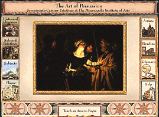

The Minneapolis Institute of Arts
Main Menu ~ Interactive Media Programs ~ Interactive Museum Maps ~ Back ~ Next
The Art of Persuasion: 17th-Century European Painting
 (c) 43k
Location: Masterworks Gallery, 3rd floor
Travel back in time to visit the people, places, and cultures that inspired many of the great works in our 17th-century European painting collection. Sixteen digital movies, 30 artist biographies, an interactive timeline, and a comprehensive glossary of art terms help you comprehend this fascinating and highly productive era.